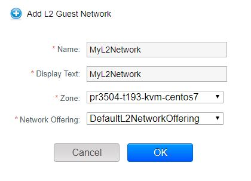

设置用户网络概述¶
People using cloud infrastructure have a variety of needs and preferences when it comes to the networking services provided by the cloud. As a CloudStack administrator, you can do the following things to set up networking for your users:
- Set up physical networks in zones
- Set up several different providers for the same service on a single physical network (for example, both Cisco and Juniper firewalls)
- Bundle different types of network services into network offerings, so users can choose the desired network services for any given virtual machine
- Add new network offerings as time goes on so end users can upgrade to a better class of service on their network
- Provide more ways for a network to be accessed by a user, such as through a project of which the user is a member
关于虚拟网络¶
A virtual network is a logical construct that enables multi-tenancy on a single physical network. In CloudStack a virtual network can be shared or isolated.
Isolated Networks¶
An isolated network can be accessed only by virtual machines of a single account. Isolated networks have the following properties.
- Resources such as VLAN are allocated and garbage collected dynamically
- There is one network offering for the entire network
- The network offering can be upgraded or downgraded but it is for the entire network
For more information, see “Configure Guest Traffic in an Advanced Zone”.
L2 Networks¶
L2 networks provide network isolation without any other services. This means that there will be no virtual router. It is assumed that the end user will have their own IPAM in place, or that they will statically assign IP addresses.
- L2 networks can be created by the end users, however network offerings which allow the network creator to specify a VLAN can only be created by the root admins.
- CloudStack does not assign IP addresses to VMs.
- Userdata and metadata can be passed to the VM using a config drive (which must be enabled in the network service offering)
Example GUI dialog box (for a regular user account) is shown below:

Runtime Allocation of Virtual Network Resources¶
When you define a new virtual network, all your settings for that network are stored in CloudStack. The actual network resources are activated only when the first virtual machine starts in the network. When all virtual machines have left the virtual network, the network resources are garbage collected so they can be allocated again. This helps to conserve network resources.
Network Service Providers¶
Note
For the most up-to-date list of supported network service providers, see the CloudStack UI or call listNetworkServiceProviders.
A service provider (also called a network element) is hardware or virtual appliance that makes a network service possible; for example, a firewall appliance can be installed in the cloud to provide firewall service. On a single network, multiple providers can provide the same network service. For example, a firewall service may be provided by Cisco or Juniper devices in the same physical network.
You can have multiple instances of the same service provider in a network (say, more than one Juniper SRX device).
If different providers are set up to provide the same service on the network, the administrator can create network offerings so users can specify which network service provider they prefer (along with the other choices offered in network offerings). Otherwise, CloudStack will choose which provider to use whenever the service is called for.
Supported Network Service Providers
CloudStack ships with an internal list of the supported service providers, and you can choose from this list when creating a network offering.
| Virtual Router | Citrix NetScaler | Juniper SRX | F5 BigIP | Host based (KVM/Xen) | |
|---|---|---|---|---|---|
| Remote Access VPN | Yes | No | No | No | No |
| DNS/DHCP/User Data | Yes | No | No | No | No |
| Firewall | Yes | No | Yes | No | No |
| 负载均衡 | Yes | Yes | No | Yes | No |
| Elastic IP | No | Yes | No | No | No |
| Elastic LB | No | Yes | No | No | No |
| Source NAT | Yes | No | Yes | No | No |
| Static NAT | Yes | Yes | Yes | No | No |
| Port Forwarding | Yes | No | Yes | No | No |
网络方案¶
Note
For the most up-to-date list of supported network services, see the CloudStack UI or call listNetworkServices.
A network offering is a named set of network services, such as:
- DHCP
- DNS
- Source NAT
- Static NAT
- Port Forwarding
- 负载均衡
- Firewall
- VPN
- (Optional) Name one of several available providers to use for a given service, such as Juniper for the firewall
- (Optional) Network tag to specify which physical network to use
When creating a new VM, the user chooses one of the available network offerings, and that determines which network services the VM can use.
The CloudStack administrator can create any number of custom network offerings, in addition to the default network offerings provided by CloudStack. By creating multiple custom network offerings, you can set up your cloud to offer different classes of service on a single multi-tenant physical network. For example, while the underlying physical wiring may be the same for two tenants, tenant A may only need simple firewall protection for their website, while tenant B may be running a web server farm and require a scalable firewall solution, load balancing solution, and alternate networks for accessing the database backend.
Note
If you create load balancing rules while using a network service offering that includes an external load balancer device such as NetScaler, and later change the network service offering to one that uses the CloudStack virtual router, you must create a firewall rule on the virtual router for each of your existing load balancing rules so that they continue to function.
When creating a new virtual network, the CloudStack administrator chooses which network offering to enable for that network. Each virtual network is associated with one network offering. A virtual network can be upgraded or downgraded by changing its associated network offering. If you do this, be sure to reprogram the physical network to match.
CloudStack also has internal network offerings for use by CloudStack system VMs. These network offerings are not visible to users but can be modified by administrators.
Creating a New Network Offering¶
To create a network offering:
Log in with admin privileges to the CloudStack UI.
In the left navigation bar, click 计算方案.
In Select Offering, choose Network Offering.
Click Add Network Offering.
In the dialog, make the following choices:
Name. Any desired name for the network offering.
Description. A short description of the offering that can be displayed to users.
Network Rate. Allowed data transfer rate in MB per second.
Guest Type. Choose whether the guest network is isolated or shared.
For a description of this term, see “About Virtual Networks”.
Persistent. Indicate whether the guest network is persistent or not. The network that you can provision without having to deploy a VM on it is termed persistent network. For more information, see “Persistent Networks”.
Specify VLAN. (Isolated guest networks only) Indicate whether a VLAN could be specified when this offering is used. If you select this option and later use this network offering while creating a VPC tier or an isolated network, you will be able to specify a VLAN ID for the network you create.
VPC. This option indicate whether the guest network is Virtual Private Cloud-enabled. A Virtual Private Cloud (VPC) is a private, isolated part of CloudStack. A VPC can have its own virtual network topology that resembles a traditional physical network. For more information on VPCs, see “About Virtual Private Clouds”.
Supported Services. Select one or more of the possible network services. For some services, you must also choose the service provider; for example, if you select Load Balancer, you can choose the CloudStack virtual router or any other load balancers that have been configured in the cloud. Depending on which services you choose, additional fields may appear in the rest of the dialog box.
Based on the guest network type selected, you can see the following supported services:
Supported Services Description Isolated Shared DHCP For more information, see “DNS 和 DHCP”. Supported Supported DNS For more information, see “DNS 和 DHCP”. Supported Supported Load Balancer If you select Load Balancer, you can choose the CloudStack virtual router or any other load balancers that have been configured in the cloud. Supported Supported Firewall For more information, see the 管理员手册. Supported Supported Source NAT If you select Source NAT, you can choose the CloudStack virtual router or any other Source NAT providers that have been configured in the cloud. Supported Supported Static NAT If you select Static NAT, you can choose the CloudStack virtual router or any other Static NAT providers that have been configured in the cloud. Supported Supported Port Forwarding If you select Port Forwarding, you can choose the CloudStack virtual router or any other Port Forwarding providers that have been configured in the cloud. Supported Not Supported VPN For more information, see “Remote Access VPN”. Supported Not Supported User Data For more information, see “User Data and Meta Data”. Not Supported Supported Network ACL For more information, see “Configuring Network Access Control List”. Supported Not Supported 安全组 For more information, see “Adding a 安全 Group”. Not Supported Supported System Offering. If the service provider for any of the services selected in Supported Services is a virtual router, the System Offering field appears. Choose the system service offering that you want virtual routers to use in this network. For example, if you selected Load Balancer in Supported Services and selected a virtual router to provide load balancing, the System Offering field appears so you can choose between the CloudStack default system service offering and any custom system service offerings that have been defined by the CloudStack root administrator.
For more information, see “System 计算方案”.
LB Isolation: Specify what type of load balancer isolation you want for the network: Shared or Dedicated.
- Dedicated: If you select dedicated LB isolation, a dedicated load balancer device is assigned for the network from the pool of dedicated load balancer devices provisioned in the zone. If no sufficient dedicated load balancer devices are available in the zone, network creation fails. Dedicated device is a good choice for the high-traffic networks that make full use of the device’s resources.
- Shared: If you select shared LB isolation, a shared load balancer device is assigned for the network from the pool of shared load balancer devices provisioned in the zone. While provisioning CloudStack picks the shared load balancer device that is used by the least number of accounts. Once the device reaches its maximum capacity, the device will not be allocated to a new account.
Mode: You can select either Inline mode or Side by Side mode:
- Inline mode: Supported only for Juniper SRX firewall and BigF5 load balancer devices. In inline mode, a firewall device is placed in front of a load balancing device. The firewall acts as the gateway for all the incoming traffic, then redirect the load balancing traffic to the load balancer behind it. The load balancer in this case will not have the direct access to the public network.
- Side by Side: In side by side mode, a firewall device is deployed in parallel with the load balancer device. So the traffic to the load balancer public IP is not routed through the firewall, and therefore, is exposed to the public network.
Associate Public IP: Select this option if you want to assign a public IP address to the VMs deployed in the guest network. This option is available only if - Guest network is shared.
- StaticNAT is enabled.
- Elastic IP is enabled.
For information on Elastic IP, see “About Elastic IP”.
Redundant router capability: Available only when Virtual Router is selected as the Source NAT provider. Select this option if you want to use two virtual routers in the network for uninterrupted connection: one operating as the master virtual router and the other as the backup. The master virtual router receives requests from and sends responses to the user’s VM. The backup virtual router is activated only when the master is down. After the failover, the backup becomes the master virtual router. CloudStack deploys the routers on different hosts to ensure reliability if one host is down.
Conserve mode: Indicate whether to use conserve mode. In this mode, network resources are allocated only when the first virtual machine starts in the network. When conservative mode is off, the public IP can only be used for a single service. For example, a public IP used for a port forwarding rule cannot be used for defining other services, such as StaticNAT or load balancing. When the conserve mode is on, you can define more than one service on the same public IP.
Note
If StaticNAT is enabled, irrespective of the status of the conserve mode, no port forwarding or load balancing rule can be created for the IP. However, you can add the firewall rules by using the createFirewallRule command.
Tags: Network tag to specify which physical network to use.
Default egress policy: Configure the default policy for firewall egress rules. Options are Allow and Deny. Default is Allow if no egress policy is specified, which indicates that all the egress traffic is accepted when a guest network is created from this offering.
To block the egress traffic for a guest network, select Deny. In this case, when you configure an egress rules for an isolated guest network, rules are added to allow the specified traffic.
Public: Indicate whether the network offering should be available to all domains or only some domains. Choose Yes to make it available to all domains. Choose No to limit the scope to one or more domains.
Domain: This is only visible When ‘Public’ is unchecked. When visible, this controls the domains which will be able to use this network offering. A multi-selection list box will be displayed. One or more domains can be selected from this list box by holding down the control key and selecting the desired domains.
Zone: This controls which zones a network offering is available in. ‘All zones’ or only specific zones can be selected. One or more zones can be selected from this list box by holding down the control key and selecting the desired zones.
Click Add.